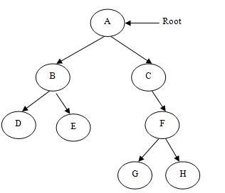
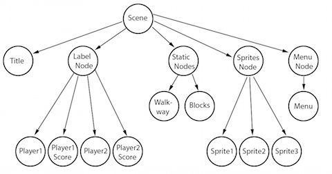
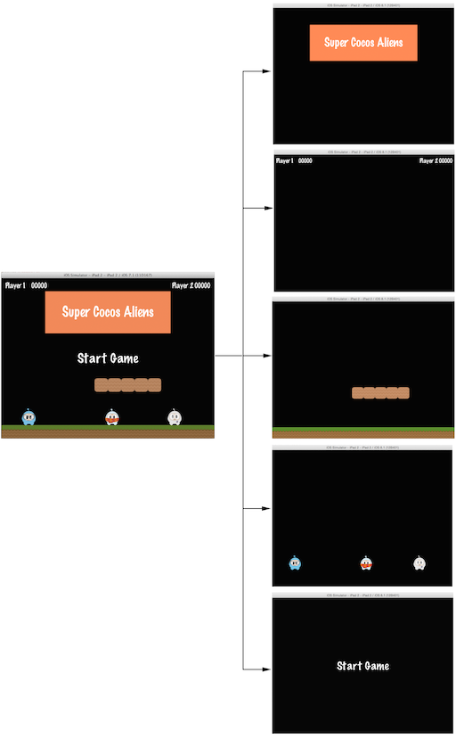

4.5 Cocos2d-JS场景树
4.5.1 场景
你的游戏通常是由一个主菜单页面，一些关卡，设置页面，游戏结束页面组成的。那你该如何将所有这些页面以及页面中的内容通过Cocos2d-JS组织起来呢？没错，就是通过场景。想想你最喜欢的一部电影，你会立刻想起那些令你印象深刻的场景片段。这同样也适用于游戏，对于任何一款游戏，不管多简单，我们都能将它解构成一些场景。
现在我们来看看一个普通的游戏场景：

上面是一个游戏的菜单页面，这个页面本身就是一个独立的场景。可以看到，这个场景中包含文字，地面，角色，砖块等视觉元素，他们组合在一起呈现出来的效果就是场景的最终显示效果。在Cocos2d-JS中，场景中的所有元素都是由渲染器负责绘制在屏幕上的。为了更好得理解渲染器和Cocos2d-JS的渲染框架，我们需要首先介绍一下场景树结构。
4.5.2 场景树概念（Scene Graph）
场景树是Cocos2d-JS中用来管理场景中所有元素的一个数据结构，场景树之所以被称为一棵树是因为它将一个场景的所有子结点以树状图的形式组织在一起。

这张图看起来有点复杂，也许你也不关心Cocos2d-JS背后的实现。实际上使用Cocos2d-JS非常简单，但是想要用Cocos2d-JS制作出优秀高效的游戏代码，理解场景以及其背后的渲染逻辑是非常重要的，这有助于你在组织场景的时候做出正确的选择。举几个例子，假如你向场景中添加了节点之后却什么都看不到？假如你的主角被显示在场景装饰物的背后呢？这些问题都需要你对场景树概念有一定的理解，将你的游戏场景树画出来往往问题就迎刃而解了。
Cocos2d-JS中场景的渲染是通过遍历场景树来做到的，对于每一个节点node，遍历的顺序如下：
- 遍历node左边的所有子结点
- 访问node节点
- 遍历node右边的所有子结点
最先遍历到的节点会被显示在场景的最下层，而最后遍历的节点会被显示在场景的最上层。用一张图来展示这个过程再清晰不过了：

下面我们再以上面4.5.1中的游戏场景为例，把它解构成一棵场景树的话就像下面这张图一样：

另一点需要注意的是，zIndex为负数的节点在场景树中位于父节点的左边，相反，zIndex为0或者正数的节点在场景树中位于父节点的右边，在构建场景树的时候请时刻留心这点。
更进一步思考，我们可以认为一个场景就是一些节点对象的集合，让我们继续解构上面的场景来看看场景树是怎么通过zIndex来完成场景中的布局的：

左边的场景实际上是由多个拥有不同zIndex的节点对象层层叠加而成的。
4.5.3 构建场景树
在Cocos2d-JS中，所有节点类都继承自cc.Node，包括场景类cc.Scene，cc.Node的addChild函数可以用来为某个节点添加子结点，并一步步构建出场景树。
// 创建一个新场景
var scene = new cc.Scene();
// 添加一个zIndex为-2的子结点，在场景树中，它位于scene的左边，因为它的zIndex为负值
scene.addChild(title_node, -2);
// 添加另一个子结点，没有指定zIndex的情况下，zIndex将等于默认值0
scene.addChild(label_node);
// 田间一个zIndex为1的子结点，在场景树中，它位于scene的右边，因为它的zIndex大于0
scene.addChild(sprite_node, 1);4.5.4 场景的渲染
TBD